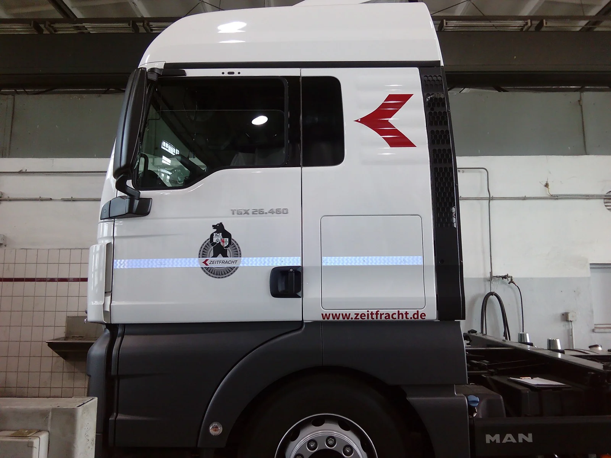

Zeitfracht
Flottenbeschriftung von LKW-Aufliegern und Zugmaschinen im markanten Zeitfracht-Design – professionelle Nutzfahrzeugbeschriftung aus Stendal.
Projekt: Fahrzeugbeschriftung für Zeitfracht
Für unseren Kunden Zeitfracht durften wir eine umfangreiche Beschriftungsserie realisieren. Neben zahlreichen LKW-Aufliegern haben wir auch die Zugmaschinen professionell mit dem markanten Zeitfracht-Design ausgestattet.
Dabei kam es nicht nur auf eine präzise Umsetzung des Corporate Designs an, sondern auch auf die hohe Beständigkeit der Folien, da die Fahrzeuge täglich im nationalen und internationalen Einsatz sind.
Unsere Leistungen im Überblick
- Teilfolierungen an Aufliegern und Zugmaschinen
- Einheitliche Logos und Schriftzüge in großem Maßstab umgesetzt
- Langlebige, wetter- und UV-beständige Materialien verwendet
- Termingerechte Abwicklung trotz großem Fahrzeugvolumen
Mit diesem Projekt haben wir gezeigt, dass wir auch große Fahrzeugflotten zuverlässig, detailgenau und effizient beschriften können. Die einheitliche Gestaltung sorgt für einen starken Unternehmensauftritt auf der Straße und unterstreicht die Professionalität unseres Kunden.
